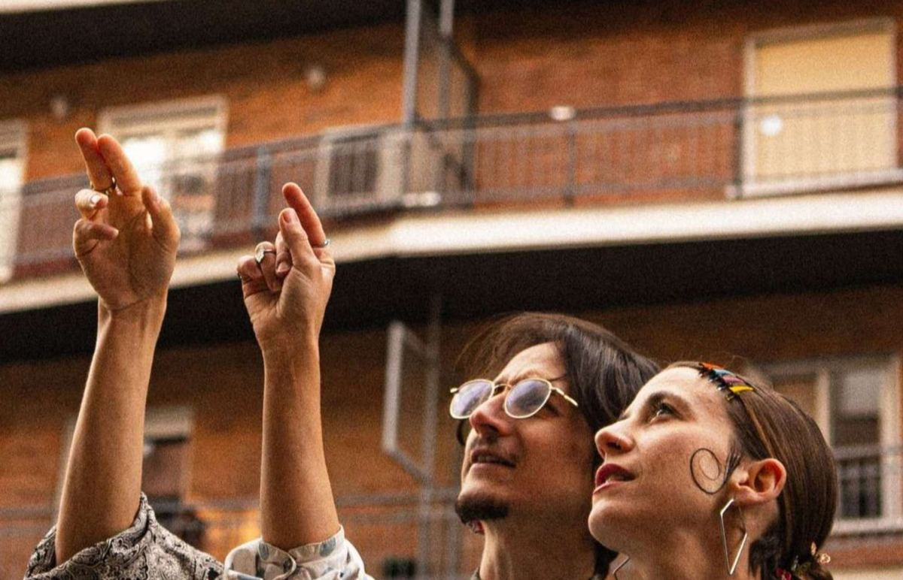

01/Qué es ALTILLO
La receta de la casa
Ariana Calahorro (voz, performance, composición; formada en teatro en la RESAD y en danza en la RAD) y David Monsalve (voz, guitarra, producción y diseño sonoro; al frente del estudio Artes Búho). Nacieron en el verano de 2023 dentro de un Volvo S90 y desde entonces cocinan su Gazpacho Sonoro.
- Raíz ibérica y latina pasada por electrónica.
- Letras ácidas sobre el delirio turbocapitalista, la herencia y el deseo.
- Teatro, relato, baile, beats y pandereta: un concierto que es también una función.
- Disco en cassette reciclado con QR y NFC, porque reutilizar también es política.
Formatos
- Festivales y salas
- 45–60 min
- Concierto performativo
- 75–90 min
- Íntimo
- 30 min
- En escena
- dúo · trío · banda
Si la materia prima es buena, desearás que te repita, nena.
02/Cifras
La cuenta, por favor
Ticket emitido el 30 de octubre de 2026.
Lo que se está cocinando · 2026–2027
Hasta aquí, a fuego lento.
Desde ahora, a fuego vivo.
Estos números se hicieron sin algoritmo a favor: el disco vivió primero en cassette reciclado y sobre el escenario, de boca en boca. A partir de este año ALTILLO trabaja con una estrategia de crecimiento artístico para que las cifras acompañen a lo que ya pasa en directo.
- Noviembre 2026 «Cualquier cosa combina» llega completo a todas las plataformas.
- Nuevo EP «A la orden p'al desorden», con «Paseíto» como primer adelanto y nuevos videoclips.
- Equipo management con Artes Búho y prensa con PromoSapiens.
Quien nos programa ahora se sienta a la mesa antes de que se llene.
03/Escenarios
Dónde se ha servido

- Café La Palma Sold outMadrid · Presentación de «Cualquier cosa combina», noviembre 2025. Volvemos el 3 de diciembre de 2026.
- Santo Desmadre FestMadrid · Sala Villanos, 2026.
- MateFestivalCoimbra, Portugal · Showcase internacional, 2024.
- +50 bolosSalas, festivales, plazas y sobremesas largas.
04/Prensa
Lo que dice la crítica gastronómica
«Un dúo madrileño que busca incansablemente la coherencia dentro de su propia contradicción.»
Efe Eme
«Gazpacho sonoro y escénico que invita a reflexionar sin renunciar nunca a la alegría.»
Radio 3 · RNE
05/Videoclips
Platos para ver
Cualquier cosa combina con Bewis de la Rosa
El himno de la casa: festivo para bailar, ácido para pensar.
Paseíto por el centro de Madrid
Primer adelanto del nuevo EP «A la orden p'al desorden».
Lo que viene: «Cualquier cosa combina» llega completo a plataformas a finales de noviembre de 2026, nuevo EP en camino y vuelta a Café La Palma el 3 de diciembre.
06/Documentos
Para llevar
07/Web, laboratorio y redes